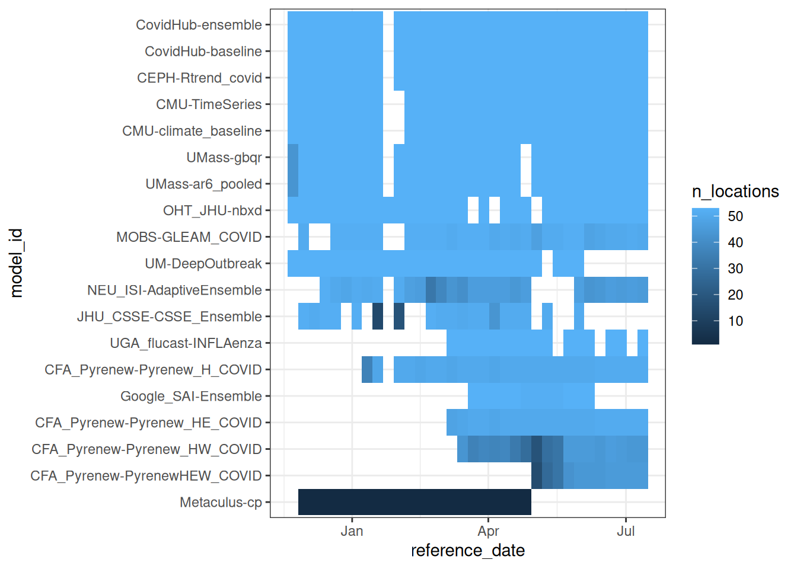
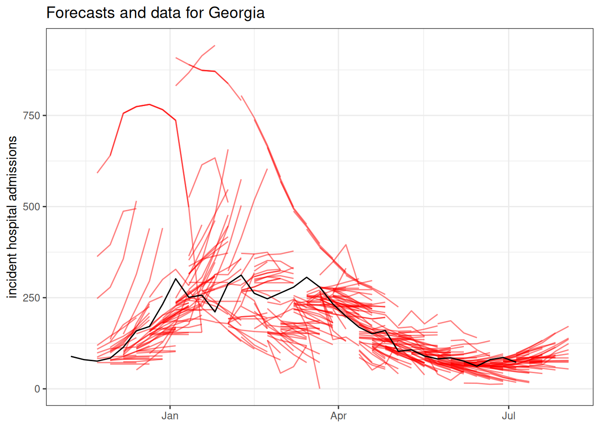
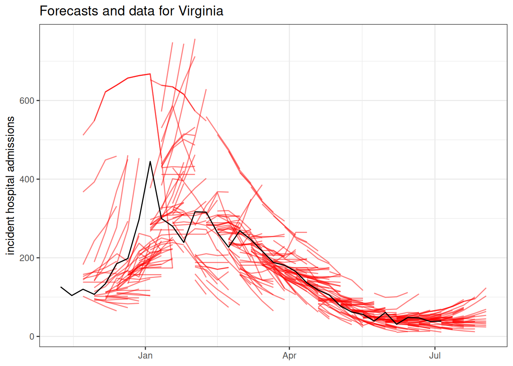
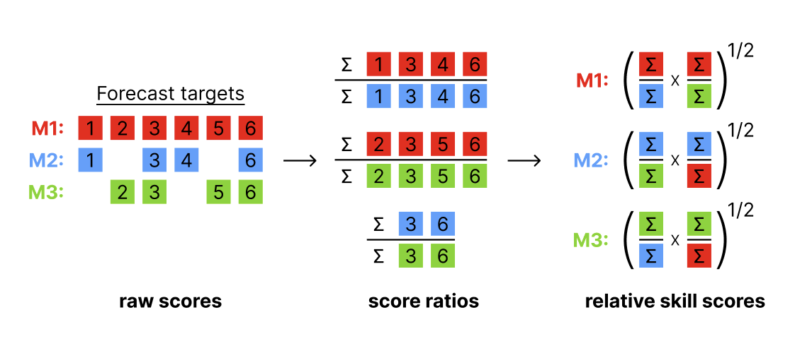
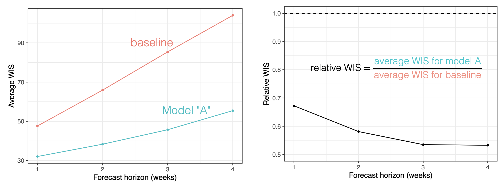

library("nfidd.forecasting")
library("dplyr")
library("ggplot2")
library("hubData")
library("hubUtils")
library("hubEvals")
library("hubEnsembles")
theme_set(theme_bw())Evaluating real-world outbreak forecasts
Introduction
So far in this course we have focused on building, visualising and evaluating “toy” forecast models in somewhat synthetic settings. In this session you will work with real forecasts from an existing modeling hub. This will expose many of the challenges involved with real-time forecasting, as well as the benefits of coordinated modeling efforts.
Slides
Objectives
The aim of this session is to develop advanced skills in working with real forecasts and an appreciation for the challenges of real-time forecasting.
NoteSetup
Source file
The source file of this session is located at sessions/real-world-forecasts.qmd.
Libraries used
In this session we will use the nfidd package to access some stored datasets, the dplyr package for data wrangling, the ggplot2 library for plotting, and the following hubverse packages: hubData, hubUtils, hubEvals and hubEnsembles.
Tip
The best way to interact with the material is via the Visual Editor of RStudio.
Initialisation
We set a random seed for reproducibility. Setting this ensures that you should get exactly the same results on your computer as we do. This is not strictly necessary but will help us talk about the models.
set.seed(5050) # for Shohei Ohtani!Introduction to the US COVID-19 Forecast Hub
The US COVID-19 Forecast Hub is a collaborative epidemiological forecasting project that started in April 2020. From 2020 through summer 2024, the project was hosted by the Reich Lab at UMass-Amherst. The short-term forecasts were published on the US CDC website as the official forecasts of record from the federal government.
During this time, the project collected over 9,000 forecast submissions from 130 models. The project collected nearly 1 billion rows of model output data, and has led to multiple research papers on epidemiological forecasting.(Ray et al. 2023; Cramer et al. 2022; Fox et al. 2024; Kim et al. 2026)
The project paused forecasting during the 2024 summer, and restarted in late fall 2024 under the purview of the US CDC Centers for Forecasting and Outbreak Analytics (CFA). When it re-started, the hub was launched using hubverse-style forecast guidelines. The public dashboard for the COVID-19 Forecast Hub has an up-to-date record of the forecasts submitted.
In this session, we will access and analyse forecasts from the CFA-run US COVID-19 Forecast Hub.
TipTake 5 minutes
Browse the current US COVID-19 Forecast Hub Dashboard. Write down three observations that are interesting or surprising to you. Share them with your neighbor(s) and listen to their observations.
Forecast dimensions
Here are some details about the structure of the COVID-19 Forecast Hub project.
- Forecasts are collected every week, with submissions due on Wednesdays.
- Teams make predictions of -1 through 3 week ahead counts of new hospital admissions due to COVID-19.
- The ground truth data (“target data” in hubverse lingo) is taken from the Weekly Hospital Respiratory Data (HRD) Metrics by Jurisdiction, National Healthcare Safety Network (NHSN) dataset.
- Teams may forecast for up to 53 locations, including the US national level, all 50 states, plus Puerto Rico and Washington DC.
- Forecasts are solicited in a quantile format.
Further details about the hub are available at its GitHub README page.
The forecasts
We will start by accessing forecast data from the COVID-19 Forecast Hub. Because the hub takes advantage of hubverse cloud data storage architecture, both the forecast and target data are stored in an S3 bucket that can be accessed using the hubData R package.
Tip
For a complete list of hubs (many of which have public data available) check out the hubverse list of hubs.
Accessing forecast data from the cloud
The following code can be used to retrieve covid forecasts from the cloud. However, there are over 7 million rows of data, and it can take some bandwidth to download. To make these results more reproducible and to provide a snapshot of the data, we also provide the forecasts as a data object that can be loaded directly from the nfidd package.
hub_path_cloud <- hubData::s3_bucket("s3://covid19-forecast-hub")
hub_con_cloud <- hubData::connect_hub(hub_path_cloud, skip_checks = TRUE)
data(covid_locations)
covid_forecasts <- hub_con_cloud |>
filter(
reference_date <= as.Date("2025-07-12"),
output_type == "quantile",
target == "wk inc covid hosp",
horizon >= 0
) |>
collect() |>
left_join(covid_locations)This line of code will load all the forecasts saved in the package into your R session.
data(covid_forecasts)Accessing target data from the cloud
Here is code to query the time-series data from the cloud-based hub.
covid_time_series <- connect_target_timeseries(hub_path_cloud) |>
filter(target == "wk inc covid hosp") |>
collect() |>
left_join(covid_locations)However, to ensure reproducibility (since this is a live dataset), we have downloaded this object for you already as of July 9, 2025, and it is available to load in from the course R package directly.
data(covid_time_series)Exploratory data analysis and visualization
Now that we’ve downloaded the forecast and target data, let’s just do a few basic explorations to make sure we understand the dimensions of our data. Ideally, storing data in the hubverse ensures that the data is “clean”, no typos in targets or locations, no missing quantile levels, no negative predictions, etc… But let’s start by just getting a sense of how many unique values we have for location, horizon, target_end_date, etc…
unique_per_column <- covid_forecasts |>
select(-value) |>
purrr::map(~ sort(unique(.x)))
unique_per_column$reference_date
[1] "2024-11-23" "2024-11-30" "2024-12-07" "2024-12-14" "2024-12-21"
[6] "2024-12-28" "2025-01-04" "2025-01-11" "2025-01-18" "2025-01-25"
[11] "2025-02-01" "2025-02-08" "2025-02-15" "2025-02-22" "2025-03-01"
[16] "2025-03-08" "2025-03-15" "2025-03-22" "2025-03-29" "2025-04-05"
[21] "2025-04-12" "2025-04-19" "2025-04-26" "2025-05-03" "2025-05-10"
[26] "2025-05-17" "2025-05-24" "2025-05-31" "2025-06-07" "2025-06-14"
[31] "2025-06-21" "2025-06-28" "2025-07-05" "2025-07-12"
$location
[1] "01" "02" "04" "05" "06" "08" "09" "10" "11" "12" "13" "15" "16" "17" "18"
[16] "19" "20" "21" "22" "23" "24" "25" "26" "27" "28" "29" "30" "31" "32" "33"
[31] "34" "35" "36" "37" "38" "39" "40" "41" "42" "44" "45" "46" "47" "48" "49"
[46] "50" "51" "53" "54" "55" "56" "72" "US"
$horizon
[1] 0 1 2 3
$target_end_date
[1] "2024-11-23" "2024-11-30" "2024-12-07" "2024-12-14" "2024-12-21"
[6] "2024-12-28" "2025-01-04" "2025-01-11" "2025-01-18" "2025-01-25"
[11] "2025-02-01" "2025-02-08" "2025-02-15" "2025-02-22" "2025-03-01"
[16] "2025-03-08" "2025-03-15" "2025-03-22" "2025-03-29" "2025-04-05"
[21] "2025-04-12" "2025-04-19" "2025-04-26" "2025-05-03" "2025-05-10"
[26] "2025-05-17" "2025-05-24" "2025-05-31" "2025-06-07" "2025-06-14"
[31] "2025-06-21" "2025-06-28" "2025-07-05" "2025-07-12" "2025-07-19"
[36] "2025-07-26" "2025-08-02"
$target
[1] "wk inc covid hosp"
$output_type
[1] "quantile"
$output_type_id
[1] "0.01" "0.025" "0.05" "0.1" "0.15" "0.2" "0.25" "0.3" "0.35"
[10] "0.4" "0.45" "0.5" "0.55" "0.6" "0.65" "0.7" "0.75" "0.8"
[19] "0.85" "0.9" "0.95" "0.975" "0.99"
$model_id
[1] "CEPH-Rtrend_covid" "CFA_Pyrenew-Pyrenew_H_COVID"
[3] "CFA_Pyrenew-Pyrenew_HE_COVID" "CFA_Pyrenew-Pyrenew_HW_COVID"
[5] "CFA_Pyrenew-PyrenewHEW_COVID" "CMU-climate_baseline"
[7] "CMU-TimeSeries" "CovidHub-baseline"
[9] "CovidHub-ensemble" "Google_SAI-Ensemble"
[11] "JHU_CSSE-CSSE_Ensemble" "Metaculus-cp"
[13] "MOBS-GLEAM_COVID" "NEU_ISI-AdaptiveEnsemble"
[15] "OHT_JHU-nbxd" "UGA_flucast-INFLAenza"
[17] "UM-DeepOutbreak" "UMass-ar6_pooled"
[19] "UMass-gbqr"
$abbreviation
[1] "AK" "AL" "AR" "AZ" "CA" "CO" "CT" "DC" "DE" "FL" "GA" "HI" "IA" "ID" "IL"
[16] "IN" "KS" "KY" "LA" "MA" "MD" "ME" "MI" "MN" "MO" "MS" "MT" "NC" "ND" "NE"
[31] "NH" "NJ" "NM" "NV" "NY" "OH" "OK" "OR" "PA" "PR" "RI" "SC" "SD" "TN" "TX"
[46] "US" "UT" "VA" "VT" "WA" "WI" "WV" "WY"
$location_name
[1] "Alabama" "Alaska" "Arizona"
[4] "Arkansas" "California" "Colorado"
[7] "Connecticut" "Delaware" "District of Columbia"
[10] "Florida" "Georgia" "Hawaii"
[13] "Idaho" "Illinois" "Indiana"
[16] "Iowa" "Kansas" "Kentucky"
[19] "Louisiana" "Maine" "Maryland"
[22] "Massachusetts" "Michigan" "Minnesota"
[25] "Mississippi" "Missouri" "Montana"
[28] "Nebraska" "Nevada" "New Hampshire"
[31] "New Jersey" "New Mexico" "New York"
[34] "North Carolina" "North Dakota" "Ohio"
[37] "Oklahoma" "Oregon" "Pennsylvania"
[40] "Puerto Rico" "Rhode Island" "South Carolina"
[43] "South Dakota" "Tennessee" "Texas"
[46] "US" "Utah" "Vermont"
[49] "Virginia" "Washington" "West Virginia"
[52] "Wisconsin" "Wyoming"
$population
[1] 578759 623989 705749 731545 762062 884659 973764
[8] 1059361 1068778 1344212 1359711 1415872 1787065 1792147
[15] 1934408 2096829 2913314 2976149 3017804 3080156 3155070
[22] 3205958 3565287 3754939 3956971 4217737 4467673 4648794
[29] 4903185 5148714 5639632 5758736 5822434 6045680 6626371
[36] 6732219 6829174 6892503 7278717 7614893 8535519 8882190
[43] 9986857 10488084 10617423 11689100 12671821 12801989 19453561
[50] 21477737 28995881 39512223 332875137From the above, we can see that
- the forecasts were made every week from 2024-11-23 until 2025-07-12,
- there is just one target, the weekly counts of hospital admissions due to COVID-19, and we only have quantile values for it,
- we have forecasts for horizons 0 to 3 weeks,
- there are 23 quantile levels present in the data,
- there are 19 models.
Let’s just do a quick visualization of forecasts from one week to make sure we understand the structure of what one date and location’s worth of forecasts look like.
covid_forecasts |>
filter(reference_date == "2025-02-15", abbreviation == "GA") |>
hubVis::plot_step_ahead_model_output(
target_data = covid_time_series |>
filter(as_of == as.Date("2025-07-09"),
abbreviation == "GA"),
use_median_as_point = TRUE,
x_col_name = "target_end_date",
x_target_col_name = "date",
pal_color = "Set3",
title = "Weekly hospitalizations due to COVID-19 (data and forecasts)"
)Warning: ! `model_out_tbl` must be a `model_out_tbl`. Class applied by defaultWarning: ! `model_out_tbl` contains more than 5 models, the plot will be reduced to show
only one interval (the maximum interval value): "0.95"Warning: ! `output_type_id` column must be a numeric. Converting to numeric.
Tip
Take a moment to explore the forecasts interactively in the above plot. We suggest starting by double-clicking on the “target” line in the legend. This will remove all models from the plot. Then add the models one at a time to compare them.
Who submitted when?
One thing that can foul up evaluation and ensembles of models is when not all models submit at the same times.
Do all models in our dataset of forecasts have the same number of predictions? Let’s look at this a few different ways.
Here is a tabular summary showing some summary stats about how often and how much each model submitted:
covid_forecasts |>
group_by(model_id) |>
summarise(
n_submissions = n_distinct(reference_date),
n_rows = n(),
n_horizons = n_distinct(horizon),
n_locations = n_distinct(location)
) |>
arrange(-n_submissions) |>
knitr::kable()| model_id | n_submissions | n_rows | n_horizons | n_locations |
|---|---|---|---|---|
| CEPH-Rtrend_covid | 33 | 160908 | 4 | 53 |
| CovidHub-baseline | 33 | 160908 | 4 | 53 |
| CovidHub-ensemble | 33 | 160908 | 4 | 53 |
| CMU-TimeSeries | 32 | 156032 | 4 | 53 |
| CMU-climate_baseline | 32 | 156032 | 4 | 53 |
| UMass-ar6_pooled | 32 | 155112 | 4 | 53 |
| UMass-gbqr | 32 | 155112 | 4 | 53 |
| OHT_JHU-nbxd | 31 | 151156 | 4 | 53 |
| MOBS-GLEAM_COVID | 29 | 136068 | 4 | 52 |
| UM-DeepOutbreak | 27 | 131652 | 4 | 53 |
| CFA_Pyrenew-Pyrenew_H_COVID | 26 | 59202 | 2 | 51 |
| NEU_ISI-AdaptiveEnsemble | 26 | 104995 | 4 | 53 |
| Metaculus-cp | 22 | 966 | 4 | 1 |
| CFA_Pyrenew-Pyrenew_HE_COVID | 19 | 43746 | 2 | 51 |
| JHU_CSSE-CSSE_Ensemble | 19 | 82340 | 4 | 52 |
| CFA_Pyrenew-Pyrenew_HW_COVID | 18 | 31694 | 2 | 48 |
| UGA_flucast-INFLAenza | 16 | 78016 | 4 | 53 |
| Google_SAI-Ensemble | 12 | 58144 | 4 | 53 |
| CFA_Pyrenew-PyrenewHEW_COVID | 11 | 19642 | 2 | 47 |
And here is a visual showing more details about submissions each week by model, sorted with the models with the most forecasts at the top. Each tile represents a week, with lighter blue colors in a given model-week indicating a higher number of locations being submitted for.
covid_forecasts |>
group_by(model_id, reference_date) |>
summarise(
n_rows = n(),
n_locations = n_distinct(location)
) |>
ungroup() |>
mutate(model_id = reorder(model_id, n_rows, FUN = sum)) |>
ggplot() +
geom_tile(aes(x = reference_date, y = model_id, fill = n_locations))`summarise()` has regrouped the output.
ℹ Summaries were computed grouped by model_id and reference_date.
ℹ Output is grouped by model_id.
ℹ Use `summarise(.groups = "drop_last")` to silence this message.
ℹ Use `summarise(.by = c(model_id, reference_date))` for per-operation grouping
(`?dplyr::dplyr_by`) instead.
TipTake 2 minutes
What are some reasons you can imagine for a model not being submitted in a given week?
NoteSolution
Here are some real examples of why models have not been submitted in a given week:
- The target dataset is not released (as was the case one week in January 2025).
- The modeler who runs the model every week is sick or on vacation.
- A model may have joined mid-season because it was still in development.
- A model have have gone offline because a team stopped participating.
- The modeling team may be unhappy with their forecast and decide not to submit (for evaluation of the model vs the modeling team this can be a big problem).
- … (there are likely other reasons too)
What are the models?
TipWhat is a baseline model?
Baseline models generate forecasts that are created to serve as benchmarks. They are designed to be naive, not overly “optimized” approaches that make forecasts. In evaluation, baseline models may occasionally do well by chance (for example, a flat line model may do well when dynamics are, well, flat). But in general, their forecasts should be “beatable” by models that are able to learn and make predictions based on dynamics in the data.
You could review the Baselines and Seasonality session for a refresher on different types of baselines.
You can read about each of the models in the model-metadata folder of the forecast hub. Model metadata can also be programmatically accessed using hubData::load_model_metadata(). There are a wide variety of models submitted to this hub.
Tip
Here are a few models that we will highlight with their provided descriptions before going further:
This is the hub-generated ensemble forecast:
- CovidHub-ensemble: “Median-based ensemble of quantile forecasts submissions.” Note this is similar to the ensembles we introduced in the ensembles session.
Here are two models that have been explicitly designed as “baselines” or benchmarks:
- CovidHub-baseline: Flat baseline model. The most observed value from the target dataset is the median forward projection. Prospective uncertainty is based on the preceding timeseries.” (This is kind of like the
rwmodel from previous sessions.) - CMU-climate_baseline: “Using data from 2022 onwards, the climatological model uses samples from the 7 weeks centered around the target week and reference week to form the quantiles for the target week, as one might use climate information to form a meteorological forecast. To get more variation at some potential issue of generalization, one can form quantiles after aggregating across geographic values as well as years (after converting to a rate based case count). This model uses a simple average of the geo-specific quantiles and the geo-aggregated quantiles.” (This is kind of like our
fouriermodel from previous sessions.)
Here are two models built by InsightNet-funded teams:
- UMass-ar6_pooled: “AR(6) model after fourth root data transform. AR coefficients are shared across all locations. A separate variance parameter is estimated for each location.”
- MOBS-GLEAM_COVID: “Metapopulation, age structured SLIR model. … The GLEAM framework is based on a metapopulation approach in which the US is divided into geographical subpopulations. Human mobility between subpopulations is represented on a network. … Superimposed on the US population and mobility layers is an compartmental epidemic model that defines the infection and population dynamics.”
TipTake 2 minutes
Browse through some of the other model descriptions. Which ones look interesting to you and why? Discuss with your neighbor.
Evaluating forecasts
To quantitatively evaluate the forecasts, we will need the “oracle output” data. Recall that these are the “ground truth” (or target) data, formatted like they were being predicted by a future-seeing model. Here is code to pull oracle-output data from the hub itself, and the first few rows of the table.
hub_path_cloud <- hubData::s3_bucket("s3://covid19-forecast-hub")
covid_oracle_output <- connect_target_oracle_output(hub_path_cloud) |>
collect()
covid_oracle_output# A tibble: 21,630 × 6
location target_end_date target output_type oracle_value output_type_id
<chr> <date> <chr> <chr> <dbl> <chr>
1 US 2024-11-09 wk inc covi… quantile 7952 <NA>
2 01 2024-11-09 wk inc covi… quantile 115 <NA>
3 02 2024-11-09 wk inc covi… quantile 14 <NA>
4 04 2024-11-09 wk inc covi… quantile 532 <NA>
5 05 2024-11-09 wk inc covi… quantile 60 <NA>
6 06 2024-11-09 wk inc covi… quantile 643 <NA>
7 08 2024-11-09 wk inc covi… quantile 145 <NA>
8 09 2024-11-09 wk inc covi… quantile 82 <NA>
9 10 2024-11-09 wk inc covi… quantile 20 <NA>
10 11 2024-11-09 wk inc covi… quantile 9 <NA>
# ℹ 21,620 more rowsVisual evaluation
Even though we have probabilistic forecasts, sometimes it is just easier to look at the point forecasts when trying to look at a lot of forecasts. Here is a plot showing all the point forecasts (the median from the quantile forecasts) for one state. The forecasts are in red and the black line shows the observed data.
covid_forecasts |>
filter(output_type_id == 0.5,
abbreviation == "GA") |>
ggplot() +
geom_line(aes(x = target_end_date,
y = value,
group = interaction(reference_date, model_id)),
alpha = 0.5,
color = "red") +
geom_line(data = filter(covid_time_series,
abbreviation == "GA",
as_of == "2025-07-09"),
aes(x = date,
y = observation))+
ggtitle("Forecasts and data for Georgia") +
ylab("incident hospital admissions") +
xlab(NULL)
covid_forecasts |>
filter(output_type_id == 0.5,
abbreviation == "VA") |>
ggplot() +
geom_line(aes(x = target_end_date,
y = value,
group = interaction(reference_date, model_id)),
alpha = 0.5,
color = "red") +
geom_line(data = filter(covid_time_series,
abbreviation == "VA",
as_of == "2025-07-09"),
aes(x = date,
y = observation))+
ggtitle("Forecasts and data for Virginia") +
ylab("incident hospital admissions") +
xlab(NULL)
The forecasts can be interactively explored at the COVID-19 Forecast Hub Dashboard.
Overall model comparison
We will start our quantitative analysis with an overall evaluation of the models, using, as we did in earlier sessions, hubEvals. We will use the Weighted Interval Score (WIS) as our primary metric of interest as we did in the session on Forecast Ensembles.
scores <- score_model_out(
covid_forecasts,
covid_oracle_output
)
scores |>
arrange(wis) |>
knitr::kable(digits = 3)| model_id | wis | overprediction | underprediction | dispersion | bias | interval_coverage_50 | interval_coverage_90 | ae_median |
|---|---|---|---|---|---|---|---|---|
| CFA_Pyrenew-PyrenewHEW_COVID | 7.062 | 1.615 | 2.292 | 3.156 | -0.042 | 0.525 | 0.899 | 10.956 |
| CFA_Pyrenew-Pyrenew_HW_COVID | 12.659 | 1.096 | 5.462 | 6.101 | -0.208 | 0.562 | 0.922 | 18.439 |
| CFA_Pyrenew-Pyrenew_HE_COVID | 17.664 | 2.387 | 8.512 | 6.765 | -0.117 | 0.502 | 0.891 | 26.980 |
| UGA_flucast-INFLAenza | 21.158 | 3.528 | 7.819 | 9.811 | 0.009 | 0.532 | 0.909 | 32.779 |
| Google_SAI-Ensemble | 26.873 | 5.424 | 15.771 | 5.678 | -0.131 | 0.432 | 0.847 | 37.045 |
| CovidHub-ensemble | 42.612 | 5.291 | 17.896 | 19.425 | -0.178 | 0.537 | 0.901 | 66.618 |
| CFA_Pyrenew-Pyrenew_H_COVID | 45.142 | 7.424 | 21.611 | 16.107 | -0.282 | 0.494 | 0.865 | 70.564 |
| UMass-ar6_pooled | 46.168 | 8.415 | 18.169 | 19.584 | -0.044 | 0.580 | 0.915 | 68.453 |
| UMass-gbqr | 53.958 | 4.782 | 35.331 | 13.845 | -0.180 | 0.450 | 0.827 | 78.845 |
| CEPH-Rtrend_covid | 55.417 | 6.078 | 27.164 | 22.174 | -0.296 | 0.436 | 0.799 | 87.749 |
| OHT_JHU-nbxd | 59.649 | 4.965 | 39.477 | 15.208 | -0.229 | 0.352 | 0.689 | 89.361 |
| CovidHub-baseline | 59.846 | 9.409 | 29.953 | 20.484 | -0.132 | 0.624 | 0.849 | 80.809 |
| NEU_ISI-AdaptiveEnsemble | 60.630 | 15.857 | 24.817 | 19.956 | -0.177 | 0.350 | 0.696 | 94.811 |
| CMU-TimeSeries | 61.873 | 19.547 | 12.833 | 29.493 | -0.144 | 0.480 | 0.885 | 92.370 |
| JHU_CSSE-CSSE_Ensemble | 67.327 | 18.473 | 22.675 | 26.179 | -0.113 | 0.469 | 0.803 | 97.273 |
| MOBS-GLEAM_COVID | 70.600 | 11.068 | 45.132 | 14.400 | -0.436 | 0.265 | 0.588 | 103.027 |
| UM-DeepOutbreak | 72.738 | 13.597 | 16.612 | 42.530 | -0.024 | 0.631 | 0.937 | 97.791 |
| CMU-climate_baseline | 121.949 | 53.723 | 5.078 | 63.148 | 0.413 | 0.521 | 0.946 | 212.010 |
| Metaculus-cp | 1389.817 | 48.520 | 385.436 | 955.862 | -0.264 | 0.667 | 1.000 | 1821.955 |
TipTake 2 minutes
Should we trust the results in this table to give us a reliable ranking for all of the forecasts? Why or why not?
NoteSolution
Because there are so many missing forecasts, this single summary is not reliable. We will need a more careful comparison to determine relative rankings of models.
Recall, here is the summary of which models submitted when. There is a lot of variation in how much each model submitted!
covid_forecasts |>
group_by(model_id) |>
summarise(
n_submissions = n_distinct(reference_date),
n_rows = n(),
n_horizons = n_distinct(horizon),
n_locations = n_distinct(location)
) |>
arrange(-n_submissions) |>
knitr::kable()| model_id | n_submissions | n_rows | n_horizons | n_locations |
|---|---|---|---|---|
| CEPH-Rtrend_covid | 33 | 160908 | 4 | 53 |
| CovidHub-baseline | 33 | 160908 | 4 | 53 |
| CovidHub-ensemble | 33 | 160908 | 4 | 53 |
| CMU-TimeSeries | 32 | 156032 | 4 | 53 |
| CMU-climate_baseline | 32 | 156032 | 4 | 53 |
| UMass-ar6_pooled | 32 | 155112 | 4 | 53 |
| UMass-gbqr | 32 | 155112 | 4 | 53 |
| OHT_JHU-nbxd | 31 | 151156 | 4 | 53 |
| MOBS-GLEAM_COVID | 29 | 136068 | 4 | 52 |
| UM-DeepOutbreak | 27 | 131652 | 4 | 53 |
| CFA_Pyrenew-Pyrenew_H_COVID | 26 | 59202 | 2 | 51 |
| NEU_ISI-AdaptiveEnsemble | 26 | 104995 | 4 | 53 |
| Metaculus-cp | 22 | 966 | 4 | 1 |
| CFA_Pyrenew-Pyrenew_HE_COVID | 19 | 43746 | 2 | 51 |
| JHU_CSSE-CSSE_Ensemble | 19 | 82340 | 4 | 52 |
| CFA_Pyrenew-Pyrenew_HW_COVID | 18 | 31694 | 2 | 48 |
| UGA_flucast-INFLAenza | 16 | 78016 | 4 | 53 |
| Google_SAI-Ensemble | 12 | 58144 | 4 | 53 |
| CFA_Pyrenew-PyrenewHEW_COVID | 11 | 19642 | 2 | 47 |
In real-world forecasting hubs, it is very common to have missing forecasts, and it probably isn’t safe to assume that these forecasts are “missing at random”. For example, some teams may choose not to submit forecasts when their model’s algorithm fails to converge, signaling a particularly difficult phase of the outbreak to predict—while others, consciously or not, submit during these periods and receive lower scores.
Additional metrics
Before we dig further into the evaluation, let’s introduce a few additional evaluation metrics and ideas.
Relative scores
Relative skill scores are a way to create “head-to-head” comparisons of models that to some extent are able to adjust for the difficulty of the predictions made by each model. Here is a figure showing how the relative scores are calculated, based on aggregated pairwise comparisons between each pair of models.

TipInterpreting relative skill
The interpretation of the relative skill metric is the factor by which the score for a given model is more or less accurate than the average model, adjusting for the difficulty of the forecasts made by that particular model. Relative skill scores that are lower than 1 indicate that the model is more accurate on the whole than the average model evaluated. For example, a 0.9 relative WIS skill for model A suggests that model A was 10% more accurate on average than other models, adjusting for the difficulty level of forecasts made by model A.

This metric (or a version of it) has been used in practice in a number of large-scale forecast evaluation research papers.(Cramer et al. 2022; Meakin et al. 2022; Sherratt et al. 2023; Wolffram et al. 2023) The general rule of thumb is that it does a reasonable job comparing models where there is never less than, say, 50% overlap in the targets predicted by any pair of models.
Here is a table of relative skill scores for WIS.
score_model_out(
covid_forecasts,
covid_oracle_output,
metrics = "wis",
relative_metrics = "wis"
) |>
arrange(wis_relative_skill)# A tibble: 19 × 3
model_id wis wis_relative_skill
<chr> <dbl> <dbl>
1 CFA_Pyrenew-PyrenewHEW_COVID 7.06 0.643
2 CFA_Pyrenew-Pyrenew_HE_COVID 17.7 0.673
3 UGA_flucast-INFLAenza 21.2 0.694
4 CovidHub-ensemble 42.6 0.766
5 UMass-ar6_pooled 46.2 0.837
6 UMass-gbqr 54.0 0.958
7 NEU_ISI-AdaptiveEnsemble 60.6 0.969
8 OHT_JHU-nbxd 59.6 1.000
9 CMU-TimeSeries 61.9 1.01
10 CEPH-Rtrend_covid 55.4 1.01
11 CovidHub-baseline 59.8 1.02
12 Google_SAI-Ensemble 26.9 1.03
13 Metaculus-cp 1390. 1.03
14 CFA_Pyrenew-Pyrenew_HW_COVID 12.7 1.04
15 JHU_CSSE-CSSE_Ensemble 67.3 1.06
16 UM-DeepOutbreak 72.7 1.22
17 CFA_Pyrenew-Pyrenew_H_COVID 45.1 1.22
18 MOBS-GLEAM_COVID 70.6 1.38
19 CMU-climate_baseline 122. 2.18 Note that the ordering of the wis column does not align perfectly with the wis_relative_skill column. This is due to the “adjustment” of the relative skill based on which forecasts were made by each model.
To make a more fair comparison, let’s subset to only include models that have submitted at least 60% of the maximum possible number of predictions for the season.
## 33 dates, 4 horizons, 53 locations, 60%
threshold_60pct <- 33 * 4 * 53 * 0.6
model_subset <- covid_forecasts |>
filter(output_type_id == 0.5) |>
group_by(model_id) |>
summarize(targets = n()) |>
filter(targets > threshold_60pct) |>
pull(model_id)
covid_forecasts |>
filter(model_id %in% model_subset) |>
score_model_out(
covid_oracle_output,
metrics = "wis",
relative_metrics = "wis"
) |>
arrange(wis_relative_skill)# A tibble: 11 × 3
model_id wis wis_relative_skill
<chr> <dbl> <dbl>
1 CovidHub-ensemble 42.6 0.708
2 UMass-ar6_pooled 46.2 0.776
3 NEU_ISI-AdaptiveEnsemble 60.6 0.896
4 UMass-gbqr 54.0 0.907
5 CEPH-Rtrend_covid 55.4 0.919
6 OHT_JHU-nbxd 59.6 0.926
7 CovidHub-baseline 59.8 0.961
8 CMU-TimeSeries 61.9 1.000
9 UM-DeepOutbreak 72.7 1.05
10 MOBS-GLEAM_COVID 70.6 1.29
11 CMU-climate_baseline 122. 2.01
TipTake 5 minutes
Looking at the relative and absolute WIS scores from the table above, and the number of total forecasts for each model, what are some of your take-aways from the analysis above?
NoteSolution
- The ensemble forecast is the most accurate model overall, by fairly large margin, close to 20% in terms of absolute WIS and 10% in terms of relative skill.
- The CovidHub-baseline has basically “average” performance, with a relative WIS score of 0.96.
- Five individual models have better performance than the baseline and four have worse performance than the baseline.
- The worst-performing model is the
CMU-climate_baseline. This is designed to be a “seasonal average” model, and covid isn’t that seasonal at the moment, so it’s not surprising that this is a bad model. - Tying back to renewal-equation approaches (covered in the companion Nowcasting & \(R_t\) estimation course):
- The
CEPH-Rtrend_covidmodel is “A renewal equation method based on Bayesian estimation of Rt from hospitalization data.” It wasn’t as good as pure statistical and ML approaches, but was better than the baseline. - The
MOBS-GLEAM_COVIDmodel is a mechanistic model (see description above) and was worse than the baseline.
- The
Since the counts at the national level are likely to dominate the absolute scale of average WIS scores, you could make an argument to subset to only the states and evaluate based on that. Here is the analysis above, on that subset:
covid_forecasts |>
filter(model_id %in% model_subset,
location != "US") |>
score_model_out(
covid_oracle_output,
metrics = "wis",
relative_metrics = "wis"
) |>
arrange(wis_relative_skill)# A tibble: 11 × 3
model_id wis wis_relative_skill
<chr> <dbl> <dbl>
1 CovidHub-ensemble 26.5 0.741
2 UMass-ar6_pooled 28.7 0.799
3 UMass-gbqr 30.1 0.839
4 CEPH-Rtrend_covid 33.3 0.929
5 CovidHub-baseline 34.6 0.939
6 CMU-TimeSeries 33.9 0.944
7 OHT_JHU-nbxd 37.1 0.976
8 NEU_ISI-AdaptiveEnsemble 39.9 1.03
9 UM-DeepOutbreak 42.5 1.04
10 MOBS-GLEAM_COVID 39.1 1.22
11 CMU-climate_baseline 68.5 1.92 The results above haven’t changed much, although the CMU-TimeSeries and OHT_JHU-nbxd swapped places in the final rankings.
Log-scale scores
We can also score on the logarithmic scale. This can be useful if we are interested in the relative performance of the model at different scales of the data, for example if we are interested in the model’s performance at capturing the exponential growth phase of the epidemic.(Bosse et al. 2023) In some sense, scoring in this way can be an approximation of scoring the effective reproduction number estimates. Doing this directly can be difficult as the effective reproduction number is a latent variable and so we cannot directly score it. Additionally, it can make sense to score a target (and make it easier to compare scores) when the variance of the scores is stabilized.
To implement the log-scale scoring, we can use the built-in transform argument to score_model_out(). We will use the log1p function which adds an offset of 1 to the observation and the predictions so we do not end up taking the log of a zero.
covid_forecasts |>
filter(model_id %in% model_subset) |>
score_model_out(
covid_oracle_output,
metrics = "wis",
relative_metrics = "wis",
transform = log1p
) |>
arrange(wis_relative_skill)# A tibble: 11 × 3
model_id wis wis_relative_skill
<chr> <dbl> <dbl>
1 CovidHub-ensemble 0.202 0.717
2 UMass-gbqr 0.223 0.794
3 UMass-ar6_pooled 0.232 0.823
4 CMU-TimeSeries 0.235 0.828
5 OHT_JHU-nbxd 0.270 0.947
6 CEPH-Rtrend_covid 0.276 0.979
7 NEU_ISI-AdaptiveEnsemble 0.286 1.06
8 CovidHub-baseline 0.307 1.09
9 MOBS-GLEAM_COVID 0.346 1.27
10 UM-DeepOutbreak 0.362 1.36
11 CMU-climate_baseline 0.392 1.39 Note that this rescaling of the data prior to scoring results in a more substantial change in the evaluation. While the ensemble remains the most accurate model, now five models are better than the baseline, and the UMass-gbqr model is the most accurate individual model (just barely edging out the CMU-TimeSeries and UMass-ar6_pooled models.)
Prediction interval coverage
The above comparisons focus on WIS and relative WIS, but in our collaborations with federal, state, and local epidemiologists, we have often found that the metric of prediction interval coverage rates is a useful tool for communicating the reliability of a set of forecasts. Prediction interval coverage measures the fraction of prediction intervals at a given levels that cover the truth. For example, if a model is well-calibrated, 50% PIs should cover the truth around 50% of the time, 90% PIs should cover the truth 90% of the time, etc… This is a key part of the forecasting paradigm mentioned in the Forecast Evaluation session is that we want to maximize sharpness subject to calibration. Prediction interval coverage rates help assess calibration. Prediction interval widths can help assess sharpness.
Tip
Prediction interval coverage is not a proper score. For example, to get perfect 90% PI coverage, you could always make 9 out of every 10 of your intervals infinitely wide and the last one infinitely small. That achieves 90% PI coverage.
But, assuming that modelers aren’t trying to game the scores, it can generally be a useful and interpretable metric in practice. Let’s add some PI coverage metrics to our (unscaled) results from before.
covid_forecasts |>
filter(model_id %in% model_subset) |>
score_model_out(
covid_oracle_output,
metrics = c("wis", "interval_coverage_50", "interval_coverage_90")
) |>
arrange(interval_coverage_90) |>
knitr::kable(digits = 3)| model_id | wis | interval_coverage_50 | interval_coverage_90 |
|---|---|---|---|
| MOBS-GLEAM_COVID | 70.600 | 0.265 | 0.588 |
| OHT_JHU-nbxd | 59.649 | 0.352 | 0.689 |
| NEU_ISI-AdaptiveEnsemble | 60.630 | 0.350 | 0.696 |
| CEPH-Rtrend_covid | 55.417 | 0.436 | 0.799 |
| UMass-gbqr | 53.958 | 0.450 | 0.827 |
| CovidHub-baseline | 59.846 | 0.624 | 0.849 |
| CMU-TimeSeries | 61.873 | 0.480 | 0.885 |
| CovidHub-ensemble | 42.612 | 0.537 | 0.901 |
| UMass-ar6_pooled | 46.168 | 0.580 | 0.915 |
| UM-DeepOutbreak | 72.738 | 0.631 | 0.937 |
| CMU-climate_baseline | 121.949 | 0.521 | 0.946 |
These results are sorted by the 90% PI coverage, but note that lower is not necessarily “better” here. What is good is having interval_coverage_90 scores that are close to 0.90. A few models (CMU-TimeSeries and CMU-climate_baseline) all have coverage rates within 5% of the nominal level for both 50% and 90% PIs.
Tip
Note, this is a nice example of a model (CMU-climate_baseline) being well calibrated (near-nominal PI coverage) but not having good accuracy (bad/high WIS on average).
Model comparison by horizon and forecast date
As we discussed in the session on evaluating forecasts, overall comparisons can miss details about ways that models perform across different forecast dimensions. Let’s run an analysis looking at the performance of model by horizon and then by forecast date. For now, we will keep the focus on the 10 models that made at least 60% of possible predictions, and we will only evaluate state-level forecasts.
scores_by_horizon <- covid_forecasts |>
filter(model_id %in% model_subset,
location != "US") |>
score_model_out(
covid_oracle_output,
metrics = "wis",
relative_metrics = "wis",
by = c("model_id", "horizon")
)
p <- ggplot(scores_by_horizon)+
geom_line(aes(x = horizon, y = wis, color = model_id))
plotly::ggplotly(p)For looking by reference_date, we will also plot the relative WIS.
scores_by_reference_date <- covid_forecasts |>
filter(model_id %in% model_subset,
location != "US") |>
score_model_out(
covid_oracle_output,
metrics = "wis",
relative_metrics = "wis",
by = c("model_id", "reference_date")
) |>
tidyr::pivot_longer(cols = c(wis, wis_relative_skill),
names_to = "metric",
values_to = "score")
p <- ggplot(scores_by_reference_date)+
geom_line(aes(x = reference_date, y = score, color = model_id)) +
facet_grid(metric~., scales = "free_y")
plotly::ggplotly(p)
TipTake 5 minutes
By horizon and reference date, how variable are the models in their accuracy?
NoteSolution
In general, the models seem fairly consistent in their performance. There are few “crossings” in the by horizon plot, suggesting that by and large models that are accurate at short-term horizons are also accurate at the longer horizons. There is much more variability by date, although it still seems that with a few exceptions, models aren’t jumping around too dramatically in their relative (or absolute level) WIS.
Going further
Challenge
- Once you start looking at lots of plots of forecast scores, it is easy to fall into the trap of not looking at the actual forecasts. Looking at the scores of the ensemble forecasts by date, it looks like there was one week when the
CovidHub-ensembledid much worse than other forecasts. Investigate this week in particular. What did the forecasts look like that week and what was anomalous about it? - In the evaluation of the real-world models, we subset to only models that had submitted a large fraction of forecasts. But this omits some interesting models, including the model from Metaculus, a human-judgment forecast aggregation company, and some models from the CDC Center for Forecasting and Outbreak Analytics (CFA). Adapt the code above to conduct a targeted and fair evaluation of the forecasts made by those models.
- Look at the list of hubverse-style hubs. Using the code above, try to replicate some of the analyses in this session for a different hub. What challenges and obstacles do you run into?
Methods in practice
There are lots of papers that provide templates for analyzing and comparing lots of forecasts. Here are a few that we recommend:
- One of the very first papers comparing forecasts from the CDC FluSight challenge.(Biggerstaff et al. 2016)
- A paper describing an open forecasting challenge for dengue fever. (Johansson et al. 2019)
- Papers describing forecasts for cases (Lopez et al. 2024) and deaths (Cramer et al. 2022) in the COVID-19 pandemic.
Wrap up
- Review what you’ve learned in this session with the learning objectives
References
Biggerstaff, Matthew, David Alper, Mark Dredze, et al. 2016. “Results from the Centers for Disease Control and Prevention’s Predict the 2013–2014 Influenza Season Challenge.” BMC Infectious Diseases 16 (1): 357. https://doi.org/10.1186/s12879-016-1669-x.
Bosse, Nikos I., Sam Abbott, Anne Cori, Edwin van Leeuwen, Johannes Bracher, and Sebastian Funk. 2023. “Scoring Epidemiological Forecasts on Transformed Scales.” PLOS Computational Biology 19 (8): e1011393. https://doi.org/10.1371/journal.pcbi.1011393.
Bosse, Nikos I., Hugo Gruson, Anne Cori, Edwin van Leeuwen, Sebastian Funk, and Sam Abbott. 2024. Evaluating Forecasts with Scoringutils in R. arXiv. https://doi.org/10.48550/arXiv.2205.07090.
Cramer, Estee Y., Evan L. Ray, Velma K. Lopez, et al. 2022. “Evaluation of Individual and Ensemble Probabilistic Forecasts of COVID-19 Mortality in the United States.” Proceedings of the National Academy of Sciences 119 (15): e2113561119. https://doi.org/10.1073/pnas.2113561119.
Fox, Spencer J., Minsu Kim, Lauren Ancel Meyers, Nicholas G. Reich, and Evan L. Ray. 2024. “Optimizing Disease Outbreak Forecast Ensembles.” Emerging Infectious Diseases 30 (9): 1967–69. https://doi.org/10.3201/eid3009.240026.
Johansson, Michael A., Karyn M. Apfeldorf, Scott Dobson, et al. 2019. “An Open Challenge to Advance Probabilistic Forecasting for Dengue Epidemics.” Proceedings of the National Academy of Sciences 116 (48): 24268–74. https://doi.org/10.1073/pnas.1909865116.
Kim, Minsu, Evan L. Ray, and Nicholas G. Reich. 2026. “Beyond Forecast Leaderboards: Measuring Individual Model Importance Based on Contribution to Ensemble Accuracy.” International Journal of Forecasting 42 (3): 924–36. https://doi.org/10.1016/j.ijforecast.2025.12.006.
Lopez, Velma K., Estee Y. Cramer, Robert Pagano, et al. 2024. “Challenges of COVID-19 Case Forecasting in the US, 2020–2021.” PLOS Computational Biology 20 (5): e1011200. https://doi.org/10.1371/journal.pcbi.1011200.
Meakin, Sophie, Sam Abbott, Nikos Bosse, et al. 2022. “Comparative Assessment of Methods for Short-Term Forecasts of COVID-19 Hospital Admissions in England at the Local Level.” BMC Medicine 20 (1): 86. https://doi.org/10.1186/s12916-022-02271-x.
Ray, Evan L., Logan C. Brooks, Jacob Bien, et al. 2023. “Comparing Trained and Untrained Probabilistic Ensemble Forecasts of COVID-19 Cases and Deaths in the United States.” International Journal of Forecasting 39 (3): 1366–83. https://doi.org/10.1016/j.ijforecast.2022.06.005.
Sherratt, Katharine, Hugo Gruson, Rok Grah, et al. 2023. “Predictive Performance of Multi-Model Ensemble Forecasts of COVID-19 Across European Nations.” eLife 12 (April): e81916. https://doi.org/10.7554/eLife.81916.
Wolffram, Daniel, Sam Abbott, Matthias an der Heiden, et al. 2023. “Collaborative Nowcasting of COVID-19 Hospitalization Incidences in Germany.” PLOS Computational Biology 19 (8): e1011394. https://doi.org/10.1371/journal.pcbi.1011394.